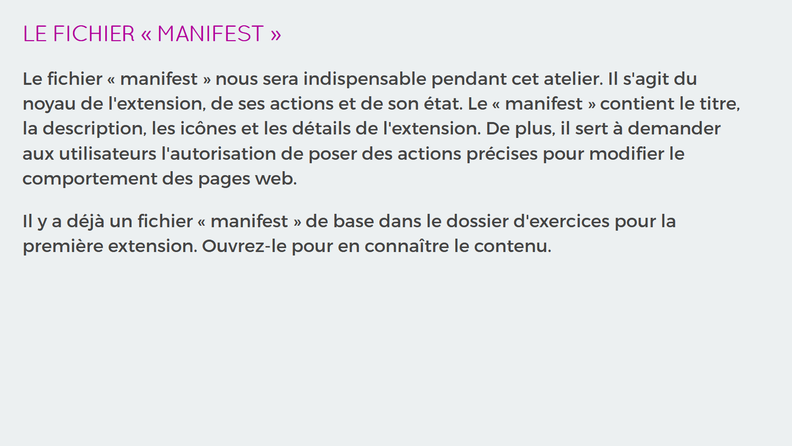
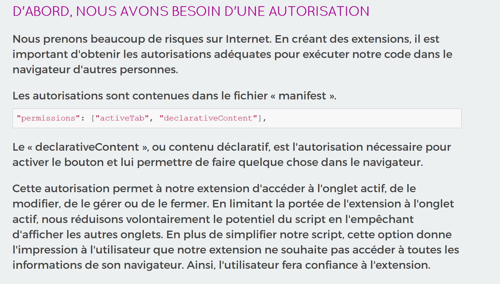
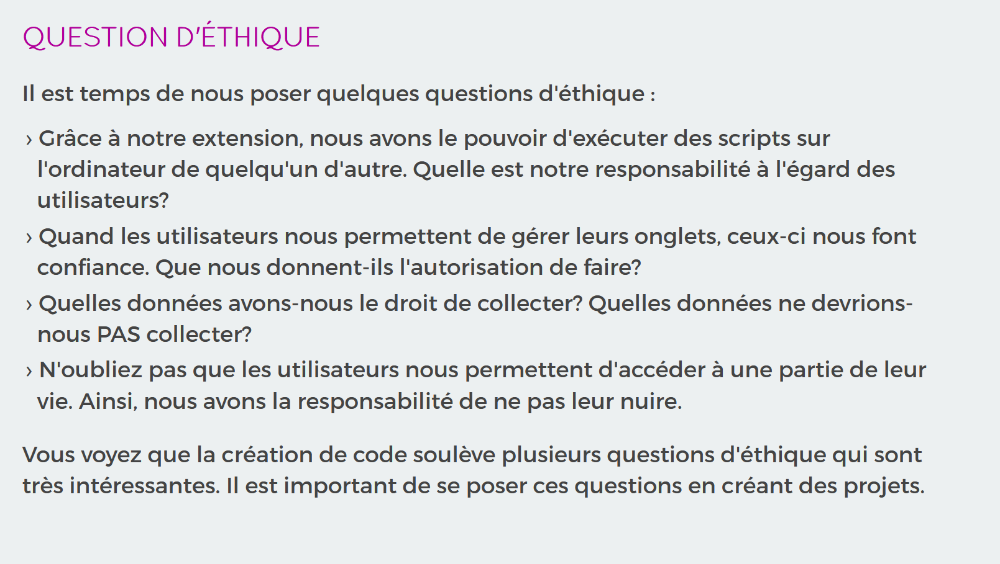
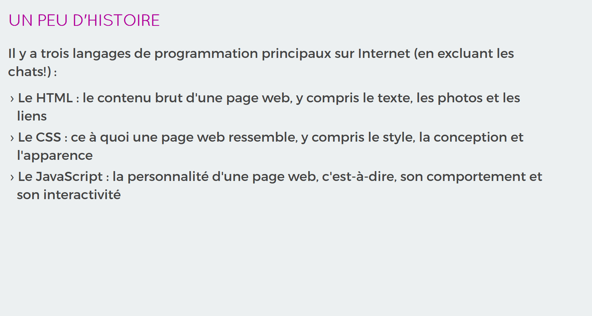
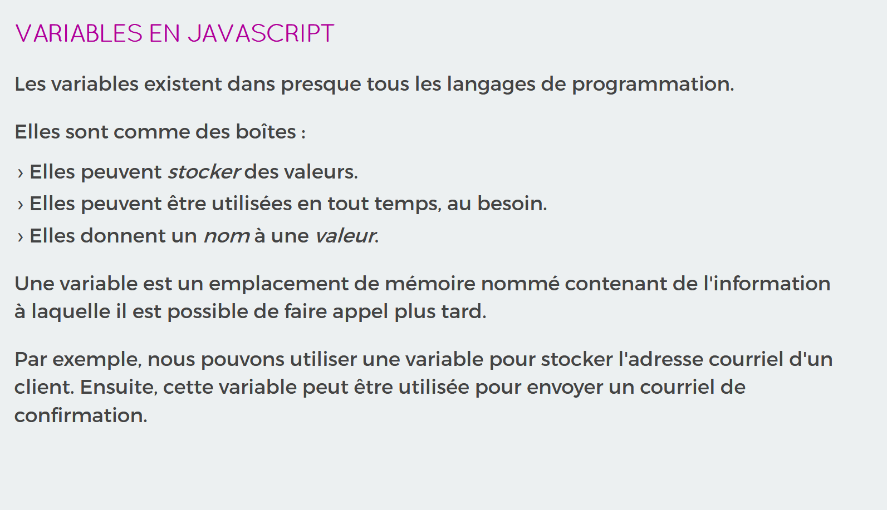
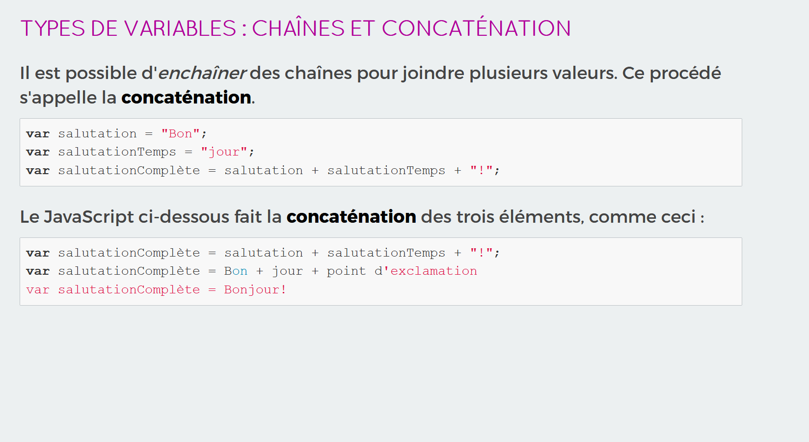
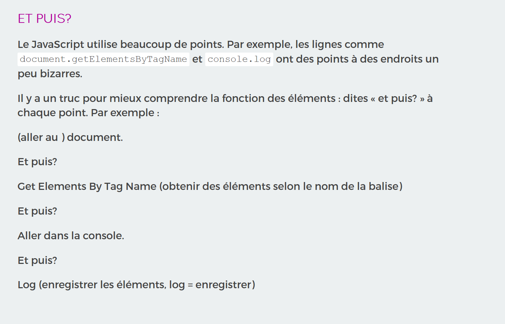
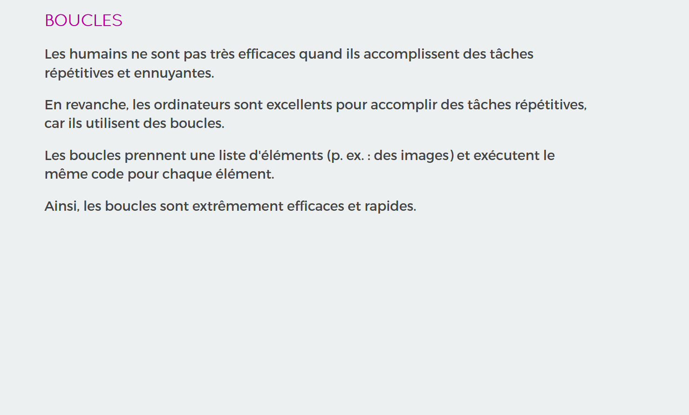

<!DOCTYPE html>
<html lang="fr">
<head>
  <meta charset="utf-8">
  <meta name="viewport" content="width=device-width, initial-scale=1, maximum-scale=1">
  <title>Canada Learning Code</title>
  <link rel="stylesheet" href="framework/css/slideshow.css" data-noprefix>
  <link rel="stylesheet" href="framework/css/fonts.css" data-noprefix>
  <link rel="stylesheet" href="framework/css/highlightjs/github.css" data-noprefix>
  <link rel="stylesheet" href="framework/css/styles.css" data-noprefix>
  <link rel="shortcut icon" href="framework/img/favicon.ico">

  <!-- S'occupe des préfixes CSS3 -->
  <script src="framework/scripts/prefixfree.min.js"></script>

  <!-- Ouvre tous les liens dans une nouvelle fenêtre -->
  <base target="_blank">
</head>

<!-- Barre de progression : entrez la durée de la présentation en minutes à l'aide de « data-duration ». -->
<body class="en" data-duration="360">


  <main>

  <section class="slide" data-toc data-markdown>
    <script type="text/template">
      ##Notes de la formatrice

      ##Ladies Learning Code : Introduction à la création d'extensions de navigateur en JavaScript

      <br>
      #Ressources

      * Extensions Chrome - Page des développeurs : [https://developer.chrome.com/extensions](https://developer.chrome.com/extensions)

      <br>
      #L'ordre du jour

      * <strong>Introduction (de 10 h 00 à 11 h 00)</strong> : faire l'activité brise-glace, présenter le sujet, donner des exemples, charger la base du code de l'extension dans Google Chrome, modifier le fichier « manifest », changer l'icône.
      * <strong>Programmation en groupe + exercice (de 11 h 00 à 12 h 30)</strong> : ajouter des autorisations, chercher les autorisations d'autres extensions, créer un bouton fonctionnel (passage vers le fichier script), créer une extension fonctionnelle changeant la couleur de fond d'une page, discuter de l'éthique.
      * <strong>Dîner (de 12 h 30 à 13 h 30)</strong> : prise de la pause-dîner autour de 12 h 30, selon l'heure d'arrivée du repas. Les diapositives prévoient que le dîner aura lieu à la fin de la discussion sur l'éthique (vous avez un peu de flexibilité!)
      * <strong>Programmation en groupe + exercice (de 13 h 30 à 14 h 00)</strong> : aborder les rudiments du HTML (balises, attributs), expliquer la dépendance d'un fichier à l'autre, ajouter des transitions, découvrir d'autres propriétés modifiables.
      * <strong>Pleins feux sur le JavaScript (de 14 h 00 à 14 h 30)</strong> : expliquer ce que sont le JavaScript et les variables et comment utiliser la console.
      * <strong>Programmation en groupe + séance de travail (de 14 h 30 à 15 h 30)</strong> : choisir des images de remplacement, expliquer les boucles, <u>activité hors ligne : expliquer les boucles <code>for</code></u>, remplacer des images.
      * <strong>Prolongement (si vous avez du temps supplémentaire) (de 30 minutes à 1 heure)</strong> : ajouter des détecteurs d'événement (pointeur sur un élément), enlever des éléments.
      * <strong>Conclusion (de 15 h 30 à 16 h 00)</strong> : présenter son projet (démos), faire un retour sur les acquis, donner des ressources pour la suite.


      <br>
      #Remarques générales

      * Important! Donnez aux apprenantes assez de temps pour télécharger les fichiers d'apprentissage de la diapositive n° 1. Assurez-vous que ces fichiers ont été téléchargés avant de poursuivre avec les diapositives.
      * Montrez aux apprenantes comment ouvrir des fichiers. Faites les étapes ensemble : Ouvrir Atom > File > ajouter le dossier du projet.
      * Montrez aux apprenantes comment copier du texte des diapositives et le coller dans Atom. Comme les raccourcis clavier sont sûrement méconnus de plusieurs participantes, n'oubliez pas de les mentionner à voix haute et de les expliciter afin que tout le monde comprenne ce que vous faites (ils sont invisibles à l'écran, ce qui pourrait prêter à confusion).
      * Rappelez constamment aux apprenantes de SAUVEGARDER et de RAFRAÎCHIR. Montrez-leur comment en faisant des changements au code dès le début de la journée. Non seulement elles apprendront à enregistrer leur code, mais elles s'amuseront aussi en faisant des tests. Essayez de faire des erreurs pour leur enseigner les joies de l'expérimentation : « Oups! J'ai brisé le code. Retour en arrière, sauvegarder, rafraîchir! ».
      * Partagez-leur vos meilleurs raccourcis et trucs pour bien naviguer entre les différentes fenêtres : coins intelligents, raccourcis de clavier, pointeur de souris sur la barre de tâches, etc.
      * Pour les démos, il est conseillé d'organiser une « exposition » (comme dans une galerie d'art!) en se levant pour voir les extensions des autres sur leur ordinateur. Demandez aux apprenantes de rafraîchir la page et de replacer leur chaise. Ensuite, accordez-leur de 5 à 10 minutes pour qu'elles puissent se promener dans le local et essayer les extensions des autres.

      <br>
      #En cas d'imprévu (hors ligne)

      Si vous n'avez pas de connexion Internet ou si elle est lente, vous trouverez dans les diapositives des remarques concernant la procédure pour réaliser les exercices hors ligne. S'il est possible que l'atelier se déroule dans un lieu n'ayant pas de connexion Internet stable, il serait avantageux de réviser les diapositives avant la journée. Ainsi, vous pourrez mettre les consignes hors ligne à l'avant-plan pour remplacer le texte principal.

      Si vous décidez de faire les exercices hors ligne, les apprenantes appliqueront leurs extensions sur les exemples de sites dans les dossiers horsligne1 et horsligne 2 (clic droit sur index.html > Ouvrir avec... > Chrome.)

      Le cas échéant, vous utiliserez aussi les images du dossier imagesHorsligne plutôt que le site d'images de remplacement.

      ## Remarque : problème courant
      Lorsque vous mettez à jour votre extension sur la page Extensions, il est possible qu'un message d'erreur s'affiche. Cliquez toujours sur « réessayer », car le bouton « annuler » effacera l'icône de l'extension (vous devrez l'enlever et l'empaqueter à nouveau pour retrouver l'icône.)

      <br>
      #Exemples propres aux diapositives

      <table style="font-size:2rem;">
        <tr>
          <td><h2>Diapositive</h2></td>
          <td><h2>Notes</h2></td>
        </tr>
        <tr>
          <td></td>
          <td><strong>Diapositive n° 17 : fichier « manifest »</strong>
            « Le fichier « manifest » est comme les fondations d'une maison ».
            L'analogie de la construction d'une maison est très utile ici. Construisons une maison ensemble : voici la liste de matériaux.</td>
        </tr>
        <tr>
          <td></td>
          <td><strong>Diapositive n° 26 : autorisations</strong>
            Facebook nous rappelle l'anniversaire de nos amis. Que nous trouvions ça pratique ou énervant, l'important est d'avoir le choix.</td>
        </tr>
        <tr>
          <td></td>
          <td><strong>Diapositive n° 26 : autorisations et onglets</strong>
            Je fais souvent découvrir les onglets à des apprenantes qui ont plusieurs fenêtres ouvertes. C'est comme de la magie : « Je vais vous montrer quelque chose qui va changer votre vie : les onglets! » Par contre, elles finissent par avoir un million d'onglets ouverts, ce qui n'est peut-être pas une bonne chose...</td>
        </tr>
        <tr>
          <td></td>
          <td><strong>Diapositive n° 41 : éthique</strong>
            Le phénomène « Parc jurassique » (réssusciter des dinosaures) : on a passé tellement de temps à chercher une façon de faire quelque chose que nous ne nous sommes jamais arrêtés pour nous demander s'il s'agissait d'une bonne chose à faire. L'important est de se poser cette question souvent.</td>
        </tr>
        <tr>
          <td></td>
          <td><strong>Diapositive n° 43 : HTML contre CSS contre JS</strong>
            De retour à l'analogie de la maison : le HTML est la structure (les murs et les meubles), le CSS est l'apparence (la conception, la peinture et les accessoires) et le JavaScript est la fonctionnalité (comme un système d'alarme). Utilisez l'analogie du corps (os, vêtements, personnalité) si votre groupe reste confus après cette comparaison.</td>
        </tr>
        <tr>
          <td></td>
          <td><strong>Diapositive n° 58 : variables</strong>
            Les variables aident Facebook à se rappeler des anniversaires, Amazon à se rappeler de votre panier, etc.</td>
        </tr>
        <tr>
          <td></td>
          <td><strong>Diapositive n° 62 : chaînes et concaténation</strong>
            L'équivalent d'un bracelet d'amitié : enchaîner des perles avec des lettres.</td>
        </tr>
        <tr>
          <td></td>
          <td><strong>Diapositive n° 67 : notation à point</strong>
            Un bon truc est de remplacer les points par « et puis? ». </td>
        </tr>
        <tr>
          <td></td>
          <td><strong>Diapositive n° 72 : boucles</strong>
            Chaîne de montage : les humains se trompent en faisant des tâches répétitives, tandis que les ordinateurs sont excellents avec celles-ci.</td>
        </tr>
      </table>

    </script>
  </section>

</main><!-- Section principale cls -->

  <script src="framework/scripts/jquery-1.11.0.min.js"></script>
  <script src="framework/scripts/slideshow.js"></script>

  <!-- Enlevez les commentaires des modules dont vous avez besoin -->
  <script src="framework/scripts/plugins/css-edit.js"></script>
  <script src="framework/scripts/plugins/css-snippets.js"></script>
  <script src="framework/scripts/plugins/css-controls.js"></script>
  <!-- <script src="plugins/code-highlight.js"></script>-->

  <script src="framework/scripts/plugins/markdown/marked.js"></script>
  <script src="framework/scripts/plugins/markdown/markdown.js"></script>
  <script src="framework/scripts/plugins/highlight/highlight-8.4.min.js"></script>
  <script>hljs.initHighlightingOnLoad();</script>
  <script src="framework/scripts/llc.js"></script>
  <script>
    var slideshow = new SlideShow();

    // Regroupe tous les éléments .snippet
    var snippets = document.querySelectorAll('.snippet');
    for(var i=0; i<snippets.length; i++) {
      new CSSSnippet(snippets[i]);
    }
  </script>
</body>
</html>
